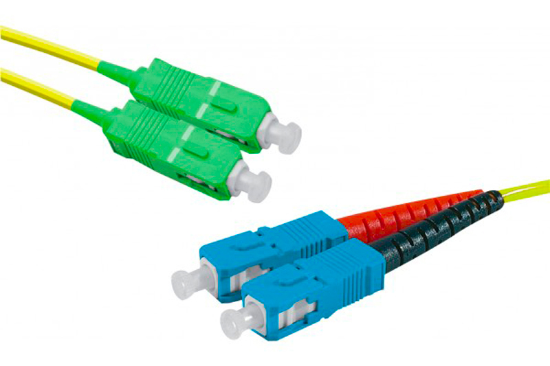

Étudiant en 2ème année de BUT Réseaux et Télécommunications, parcours Cybersécurité
À propos de moi
J'ai développé ma compétence d'autodictate en commençant à légèrement apprendre la programmation, et la cybersécurité. J'ai, par ailleurs, développé une attirance pour cette dernière.
De ce fait, j'ai rejoint la formation en Réseaux et Télécommunications étant donné qu'elle propose une spécialisation en cybersécurité en deuxième année.
Je suis quelqu'un de discret, rigoureux, ouvert d'esprit, et qui aime le travail d'équipe.
Grâce à ces qualités, je peux sans difficulter développer mes connaissances dans les réseaux informatiques, les télécommunications, la programmation et la cybersécurité.
Je recherche donc un stage dans le domaine des réseaux informatiques et de la cybersécurité, d'une durée de 10 semaines, à partir d'avril 2025.
Formations
- Février 2025 : Validation du semestre 3 de BUT Réseaux et Télécommunications, Aubière (63)
J'ai pu valider le troisième semestre de ma formation avec 15 de moyenne. J'ai notamment été classé premier de la promotion dans les ressources de cybersécurité !
- Juillet 2024 : Validation de la première année de BUT Réseaux et Télécommunications, Aubière (63)
J'ai réussi à valider la première année de ma formation avec une moyenne générale de 15.72/20 me classant dans le top 5 de la promotion.
- Septembre 2023 : Entrée en BUT Réseaux et Télécommunications, Aubière (63)

Le BUT (Bachelor Universitaire de Technologie) est une formation spécialisée dans les réseaux informatiques et dans les télécommunications.
Dans ce cursus, nous avons différentes ressources telles que l'apprentissage des télécommunications, de la programmation, des réseaux informatiques, et du système sous Linux où nous faisons des commandes en bash.
J'ai un goût particulier pour les réseaux informatiques et pour le système. En effet, j'aime comprendre comment le monde est connecté. Grâce aux réseaux, je peux le savoir. Et j'aime le système car c'est une matière qui est très utile en cybersécurité étant donné que nous apprenons à utiliser un ordinateur en ligne de commande.
- Juillet 2023 : Obtention du baccalauréat général mention Bien. Lycée Jeanne d'Arc, Clermont-Ferrand (63)

J'ai obtenu mon baccalauréat avec les spécialités Mathématiques, Numériques et Sciences de l'Informatique (NSI), ainsi que l'option maths expertes.
Grâce à la NSI, j'ai pu apprendre les bases de la programmation Python.
J'ai aussi pu apprendre quelques bases de la programmation Web avec le HTML, le CSS. Enfin, j'ai aussi travaillé un petit peu sur les réseaux informatiques, ce qui m'a fortement intéréssé. C'est aussi ce qui m'a poussé à venir en BUT Réseaux et Télécommunications.
Grâce aux Mathématiques et à l'option maths expertes, j'ai pu largement améliorer mes compétences dans ce domaine. Si bien que j'ai déjà fait le programme de 1ère année de BUT en mathématiques.
- Avril 2023 : Obtention de la certification PIX
En avril 2023, j'ai obtenu ma certification PIX. Cette certification permet de savoir si nous savons maîtriser un minimum l'outil numérique.
Expériences professionnelles
Septembre - Décembre 2024 : Soutien en mathématiques au BUT, Aubière (63) :
Au début du troisième semestre de BUT, j'ai été sélectionné pour réaliser du soutien en mathématiques et en télécommunications pour des élèves de première année.
Le contrat était pour une durée de 10 heures.
L'objectif était de remettre à niveau les élèves qui partaient avec des lacunes dans ses deux matières.
De ce fait, je les laissais travailler le domaine qu'ils voulaient puis, je m'occupais de les aider en leur donnant des conseils pour réussir les exercices.
Au final, cette expérience a été très enrichissante pour moi car elle m'a permis d'améliorer ma pédagogie. De plus, ces élèves ont pu progresser dans ces domaines et augmenter leurs notes.
Juillet - Août 2024 : Vendeur en Service Après Vente à E.Leclerc, Aubière (63) :

Pendant l'été 2024, j'ai pu travailler dans l'hypermarché E.Leclerc La Pardieu situé à Aubière dans le Puy-de-Dôme.
Cette expérience a été très enrichissante pour moi. J'ai pu vraiment découvrir le monde professionnel.
J'avais différentes missions : prendre les produits des clients, les tester sinon les envoyer en réparation, préparer des avoirs ou des remboursements et donner des colis au client car le magasin sert aussi de point relais.
Mais ma mission préférée était probablement la préparation de produits. Plus précisément : un client commandait un ordinateur, une télévision, ou une chaîne HiFi et je devais aller chercher le carton correspondant en réserve. Ensuite, je devais préparer le produit : le tester, le réinitialiser si c'était une télévision ou un ordinateur, puis le nettoyer, et le remballer.
Avec cette tâche, j'apprenais à bien manipuler divers outils et j'ai aussi développé ma rigueur pour que le produit soit parfait pour le client.
16 Mai 2024 : Cordées de la réussite :

Le 16 mai 2024, j'ai eu la chance de participer aux Cordées de la réussite au lycée Gergovie à Clermont-Ferrand (63).
Le but de ce programme était de conseiller des lycéens de baccalauréat professionnel option SIN (Informatique) pour leur "Chef d'Oeuvre" qui est un oral qu'ils passent à la fin de l'année. C'est l'équivalent du grand oral dans un bac général.
Ils présentaient leur oral individuellement correspondant à une soutenance de stage en entreprise. Et je devais ensuite les conseiller.
Ce fut une expérience très enrichissante de mon point de vue. Je me suis rendu utile pour ces lycéens.
Compétences
Cybersécurité
Méthodologie du pentesting :
- Contexte :
Travail en binôme réalisé lors d'un projet. L'objectif était d'apprendre à faire du pentest sur 5 machines mises à disposition par TCM Security.
- Mon travail :
J'ai dû apprendre les différentes étapes d'un pentest :
- Collecte passive d'informations
- Collecte active d'informations
- Évaluation des vulnérabilités
- Exploitation
- Effacer les traces
Ensuite, je me suis occupé du pentest de plusieurs machines.
- Résultats :
Au final, j'ai énormément appris dans le domaine du pentesting et souhaite donc approfondir mes compétences dans ce domaine de la cybersécurité.
Pentest : 70%
Réseaux
Administration systèmes : Windows Server et Active Directory :
- Contexte :
Travail en binôme réalisé lors d'un travail pratique. L'objectif était d'apprendre à utiliser Active Directory qui est un service du système d'exploitation Windows Server.
- Mon travail :
J'ai dû installer le rôle DHCP sur l'application Gestionnaire de serveur.
Ensuite, j'ai créé des Unités Organisationnelles ainsi que des Utilisateurs pour les y ajouter. Puis, j'ai appliqué des rôles spécifiques pour chaque utilisateur. Enfin, j'ai appris à faire un partage de fichier entre plusieurs ordinateurs du même domaine.
- Résultats :
Au final, j'ai compris comment fonctionne un Active Directory, que c'est un outil très utilisé. Je pourrai donc me servir de cette compétence en entreprise.
Réseaux : 90%
Télécommunications
Étude d'une bobine de fibre optique :

- Contexte :
Travail en binôme réalisé lors d'un travail pratique. L'objectif était d'étudier l'atténuation dans une ligne de fibre optique.
- Mon travail :
Au début, j'ai mesuré la puissance en sortie de la fibre sans la bobine de test pour avoir un résultat théorique, à l'aide d'un photomètre.
Ensuite, j'ai ajouté la ligne à tester au milieu de la fibre et j'ai regardé sa puissance sur l'outil mis à notre disposition.
J'ai trouvé une puissance inférieure, donc la ligne de test n'était pas parfaite.
- Résultats :
J'ai déduit l'atténuation de la ligne. Ce TP m'a permis d'améliorer ma rigueur car il faut manipuler la fibre avec soin car c'est fragile. Ensuite, nous avons répété l'opération dans différents milieux.
Télécommunications : 80%
Web
Portfolio :
- Contexte :
Création en autonomie d'un portfolio en HTML et CSS.
- Mon travail :
Pour réaliser ce travail, j'ai dû définir en amont l'allure que je voulais donner à mon site. Ensuite, je l'ai retranscrit grâce aux deux langages de programmation Web en respectant les onglets qui étaient imposés.
- Résultats :
Mon niveau en Web a beaucoup augmenté comme ce projet était long et à faire tout seul. Il a aussi contribué à me donner une certaine rigueur.
Web : 75%
Téléphonie
Configuration de téléphonie sur IP :
- Contexte :
Travail en binôme réalisé lors d'un travail pratique de 9 heures. L'objectif était d'apprendre à configurer des téléphones sur IP.
- Mon travail :
J'ai commencé par connecter deux téléphones au Switch de la salle et les ai configurés sur l'interface de l'IPBX. Ils pouvaient ensuite s'appeler
Par la suite, j'ai configuré un trunk SIP. De ce fait, je pouvais appeler les téléphones depuis l'extérieur (en passant par mon téléphone portable par exemple).
Puis, j'ai créé une messagerie vocale, des groupes d'appels, un renvoi d'appel ainsi qu'un assistant téléphonique : MyPortal.
Enfin, j'ai configuré des téléphones sans-fil DECT qui était la partie la plus compliquée du TP.
- Résultats :
En conclusion, j'ai appris à configurer divers téléphones et à configurer un petit réseau téléphonique avec différentes fonctions comme la messagerie vocale par exemple.
Téléphonie sur IP : 90%
Qualités
Rigoureux
Dans la formation, nous faisons beaucoup de travaux pratiques en Télécommunications. Donc, nous utilisons du matériel très couteux comme des oscilloscopes, ou encore des câbles de fibres optiques.
Il faut donc être très rigoureux et soigneux en utilisant ces outils !
Ouvert d'esprit
Je suis beaucoup de cours différents. De ce fait, je développe une culture générale dans toutes ces ressources même si j'aimerais me spécialiser dans la cybersécurité.
Travail d'équipe
Je me considère comme étant capable de réaliser des travaux avec d'autres personnes car nous faisons beaucoup de travaux pratiques en binômes notamment en réseaux et en télécommunications.
Compétences linguistiques
 Anglais : B2
Anglais : B2
 Allemand : B1
Allemand : B1
Projets
Projet n°1 de BUT : Projet intégratif : Mettre en place le réseau d'une petite entreprise :
Ce projet a clôturé ma première année de BUT Réseaux et Télécommunications. Il se faisait par groupe de 5 personnes.
Le but était de créer le réseau d'une petite entreprise.
Tout d'abord, nous avons créé un rapport présentant la solution à nos clients. Pour ma part, je me suis occupé des parties sur la demande, la solution, et la moitié de l'ordonnancement des tâches ainsi que de la structure du dossier.
Ensuite, nous avions 2 semaines pour mettre en place leur réseau avec tous les services différents.
Je me suis notamment occupé de la configuration du switch et du routeur, de la centralisation des logs avec Zabbix, ainsi que la configuration d'Active Directory pour la gestion des utilisateurs.
Avec Zabbix, j'ai eu des problèmes. En effet, je ne connaissais pas du tout cette technologie de supervision de réseau. De ce fait, j'ai dû apprendre tout seul avec plusieurs tutoriels pour pouvoir réussir à configurer ce logiciel. Au final, Zabbix était bien configuré et fonctionnel.
En conclusion, ce projet m'a permis de consolider mes compétences et d'en développer de nouvelles. En effet, il fallait aller chercher sur Internet et dans les programme nationaux de deuxième et de troisième année pour répondre au mieux à la demande du client.
Je peux donc dire que j'ai développé ma capacité d'autodictate grâce à une forme d'autoformation. Et j'ai obtenu la note de 17/20.
Voici le rapport du début présentant la solution :
Projet n°2 de BUT : Sensibilisation à l'hygiène informatique :
Dans une ressource du BUT, j'ai dû travailler, en binôme, sur une présentation orale et un rapport écrit sur un sujet de notre choix.
Nous avons choisi : La sécurité des mots de passe.
L'objectif était de répondre à la problématique : "Quels sont les enjeux de la sécurité des mots de passe ?".
Pour répondre au sujet, j'ai d'abord parlé des risques auxquels sont soumis les mots de passe, pour ensuite traiter des méthodes pour les sécuriser.
Voici mon rapport et le diaporama présenté à l'oral :
Grâce à ce projet, nous avons obtenu la note de 16,50/20 pour le rapport et de 17/20 pour la présentation orale.
Projet n°3 de BUT : Mesurer et caractériser un signal par simulation numérique :
Au lieu de caractériser un signal par oscilloscope ou un analyseur de spectres, j'ai utilisé un logiciel de simulation : MATLAB.
Au début, j'ai appris à utiliser ce langage de programmation qui ressemble à Python.
Ensuite, j'ai appris à faire un calcul numérique : calculer l'aire sous la courbe à l'aide du logiciel pour après obtenir la valeur moyenne du signal.
Enfin, j'ai répété ces étapes mais au lieu de générer un signal manuellement, j'ai utilisé un signal que j'ai exporté depuis un générateur de signaux et un oscilloscope.
Au final, j'ai appris à utiliser MATLAB qui est un logiciel utilisé dans les télécommunications.
Voici mon compte rendu :
OSINT
Il y a 2 ans, j'ai commencé à apprendre, en autodictate, l'OSINT. Ce sigle correspond à : Open Source Intelligence. En français, on parle de Renseignement d'Origine Source Ouverte.
Le but est simple. Nous avons un élément sur une personne comme un pseudonyme, un nom/prénom, une adresse mail, un numéro de téléphone, et le but est de trouver un maximum d'informations sur cette personne. Le but est de n'utiliser que des sites ou des applications en source ouverte.
Je n'ai jamais pratiqué contre de vraies personnes, seulement contre des personnes fictives.
C'est une discipline de la cybersécurité. Elle est notamment beaucoup utilisée par les journalistes, ou encore des organisations étatiques comme la DGSI et la DGSE.
J'ai donc appris comment les gens pouvaient trouver des informations sur nous, et comment nous protéger de cette pratique.
Compétences en OSINT : 80%
Cryptographie

En maths expertes, j'ai étudié un chapitre : les congruences. Celles-ci sont énormément utiles dans le domaine de la cryptographie.
La cryptographie est la science du codage, celle de cacher des informations.
Je m'y suis donc intéréssé. J'ai remarqué que toute notre vie était régie par la cryptographie. En effet, quand nous commandons en ligne ou quand nous envoyons un message à quelqu'un, le chiffrement RSA, utilisant les congruences, permet de chiffrer les données échangées pour que personne ne puisse les intercepter.
J'ai ensuite décidé de réaliser mon grand oral sur le chiffrement RSA. J'ai eu la note de 16/20.
Grâce à cet oral, je me suis vraiment intéréssé à ce domaine de la cybersécurité. De ce fait, je me suis inscrit sur un site en ligne pour développer mes connaissances : cryptohack.org. Je compte continuer cet apprentissage car je trouve ce domaine vraiment très intéressant.
Divers
Sport
Je pratique le patinage freestyle sur glace, depuis 2 ans. C'est un mélange de hockey sur glace, et une variante du patinage artistique.
Mon objectif est ici aussi de m'améliorer pour atteindre mon plein potentiel.
En 2024, je vais sûrement commencer le hockey sur glace au club de Clermont-Ferrand (63).
Ce sport me permet de me détendre et de repousser mes limites. C'est pourquoi je le pratique.
Cinéma
J'aime énormément le septième art. Je regarde souvent des films sur mon temps libre comme des classiques, des films d'histoires, de science-fiction, western, ou encore d'action.
Mes films préférés sont : La trilogie du Dark Knight de Christopher Nolan, la trilogie du Parrain de Francis Ford Coppola, la trilogie du Dollar, et Heat.
Mentions honorables : Il faut sauver le soldat Ryan, Le Silence des Agneaux, Scarface, les films de Charles Chaplin, et la saga Star Wars.
J'aime énormément les films car ils permettent de m'évader pendant quelques heures et de développer ma culture générale dans divers domaines comme l'histoire par exemple.
Lecture
J'aime aussi la lecture. Celle-ci est un moyen de voyager intellectuellement et de sortir de notre monde tout en stimulant notre imagination.
Mes genres préférés sont : la Bande Dessinée, la Poésie, le Roman.
Mes bandes dessinées préférées sont les Tintin de Hergé.
Mon recueil de poésie préféré est : Les Fleurs du Mal , notamment le poème "Élévation", Charles Baudelaire, 1857.
Mon roman préféré est : Berezina, Sylvain Tesson.
J'aime la lecture car elle m'apprend à penser, à développer ma culture générale, et à améliorer ma qualité d'expression.

Passe-temps
En passe-temps, j'aime développer mes connaissances en informatique et en cybersécurité.
J'aime aussi jouer à des jeux-vidéos d'action et de stratégie comme Tom Clancy's Rainbow Six Siege, ou encore à des jeux d'aventure comme The Elder Scrolls V : Skyrim.
Ces jeux me permettent de développer ma capacité de stratégie ainsi que ma rigueur.

CV
Contact
Téléphone : +33 6 12 02 88 04
Adresse mail Universitaire : maxence.ducrey@etu.uca.fr
LinkedIn : Maxence DUCREY